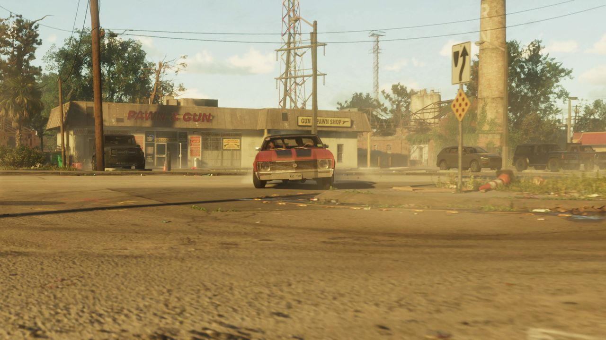
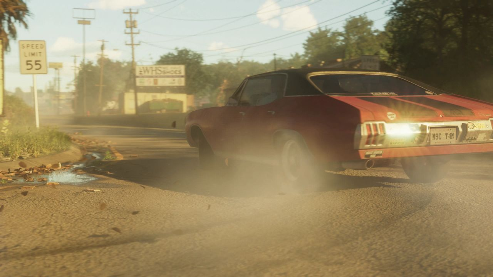
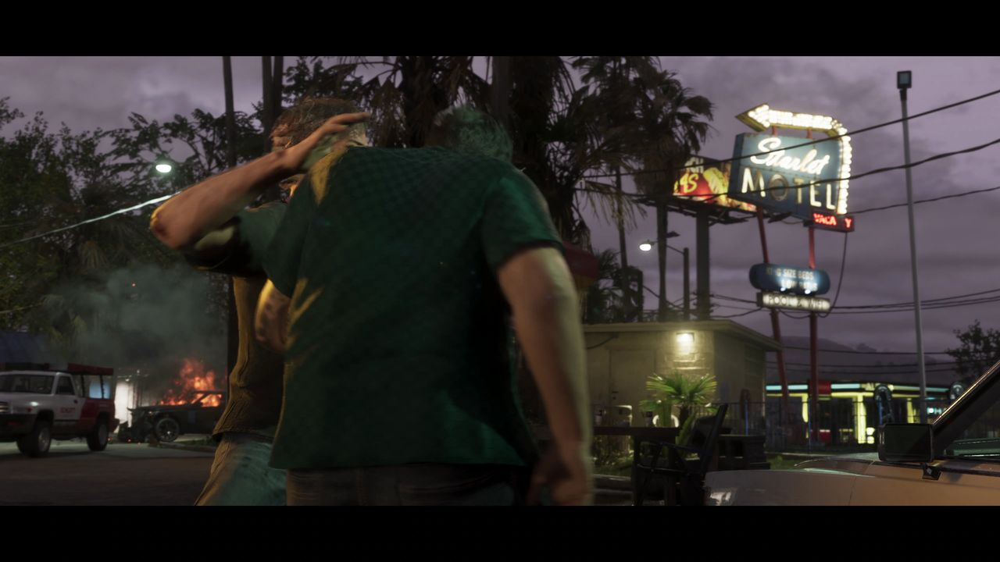
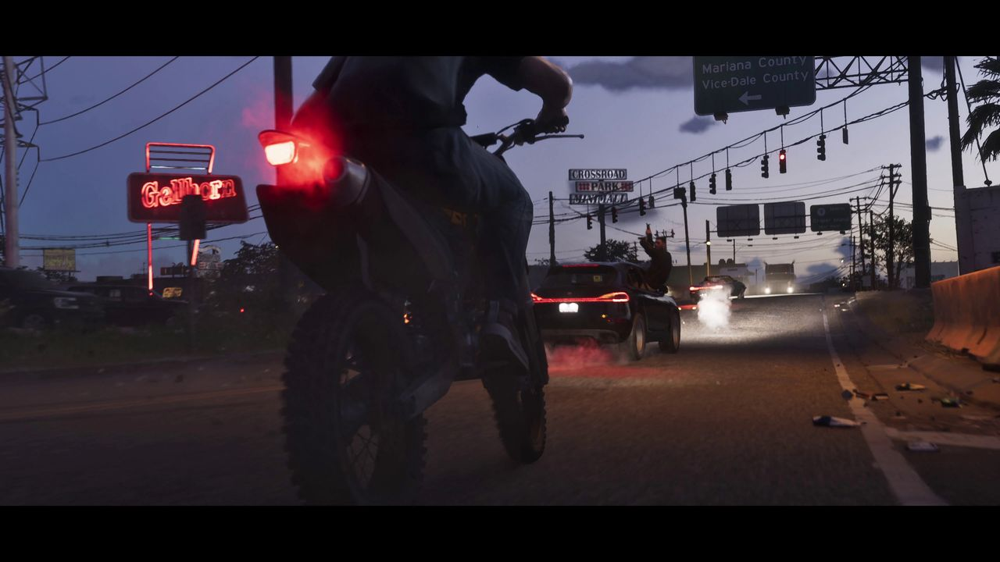
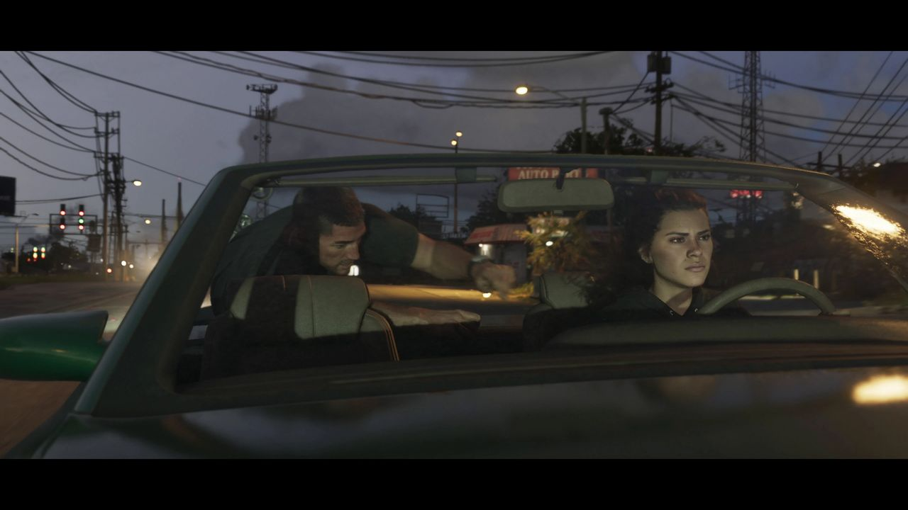
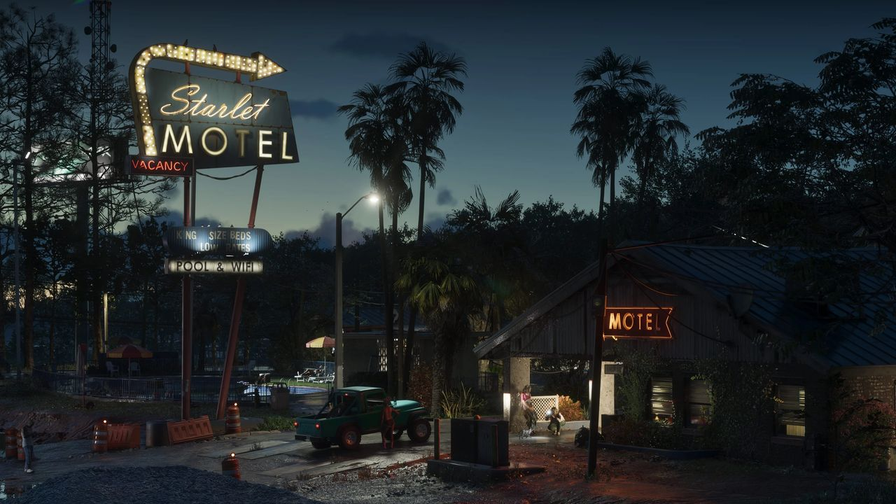
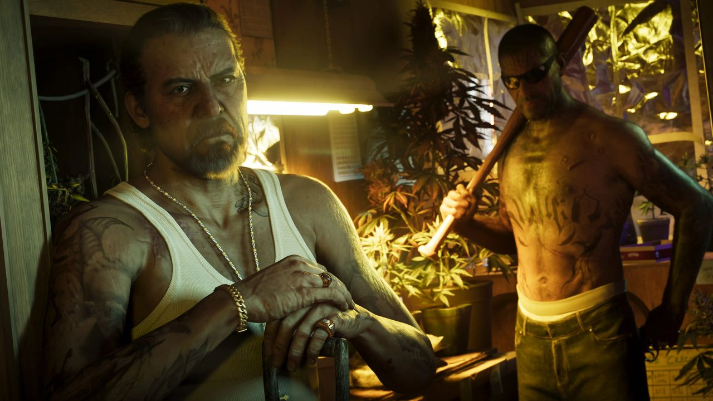
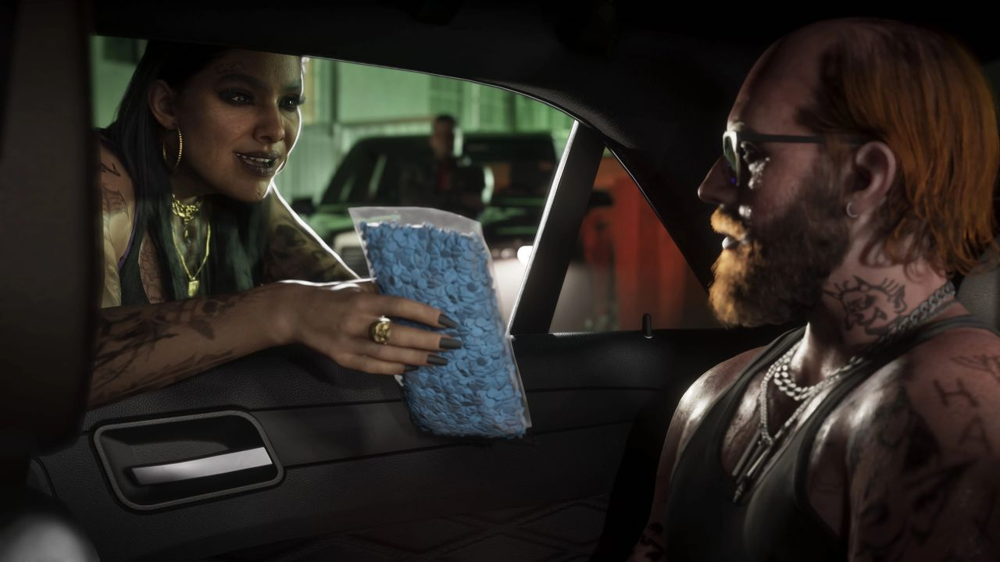

Fiabilité Cette région a d'abord été révélée par les fuites de septembre 2022 (clips de développement non officiels), puis confirmée par la bande-annonce 1, la bande-annonce 2 et le site officiel. Les éléments issus des fuites sont précisés dans le texte.
Port Gellhorn est une ville du comté de Kelly, dans l'ouest de Leonida. C'est une vaste zone côtière qui mélange commerces, infrastructures industrielles, forêts denses, prairies et collines.
Rockstar la décrit comme la Floride des zones touristiques plus modestes, parfois en difficulté : attractions abandonnées, motels bon marché et centres commerciaux en ruine.
Galerie








© Rockstar Games / Take-Two Interactive — images officielles de GTA VI (bandes-annonces, captures, site officiel), via GTA Wiki.
Comment on la connaît
- Fuites de septembre 2022 (non officiel) : plusieurs clips montrent de larges portions de ses quartiers commerciaux et industriels, ainsi qu'une vue du dessus du circuit. Un menu de débogage y liste aussi des lieux encore non vus : commissariat, gare, parc de caravanes, terrain de foot, terrain de basket, etc.
- Bande-annonce 1 : première apparition officielle, avec un prêteur sur gages et un magasin d'alcool déjà cités dans les fuites.
- Bande-annonce 2 : fin de la vidéo, avec le centre commercial Crossroad Park Minimall et le Bocamar Bridge.
- Site officiel : captures et carte postale qui mettent en avant le club de strip-tease Delights et le port maritime.
Environs
Autour de la ville, on trouve de vastes zones rurales et de loisirs : forêts, terres agricoles, ranchs, dunes côtières, plages et lacs. On y pratique la conduite tout-terrain, le motocross (y compris sur les dunes), le VTT, la pêche à la perche et les courses de démolition. Voir aussi le Thrillbilly Mud Club, le parc de boue de la région.
Quartiers et sites
Lieux d'intérêt
- Un lavage auto
- Le centre commercial Crossroad Park Minimall
- Delights (club de strip-tease)
- Hank's Waffles
- Port Gellhorn Pawn & Gun (prêteur sur gages et armurerie)
- Une supérette Quickshop
- Le Starlet Motel
- Un motel abandonné, une église et une gare (noms inconnus)
Routes et ponts
Les principales routes sont l'Interstate 404, la Leonida State Route 9 et la U.S. Route 2. On y trouve le Bocamar Bridge ainsi qu'un pont ferroviaire sans nom. La police locale est la Port Gellhorn Police Department.
Inspiration réelle
La ville s'inspire surtout de Panama City (Floride) et des communes voisines du comté de Bay (Parker, Callaway, Springfield). Le port ressemble à celui de Tampa (Port Tampa Bay).
Son nom semble rendre hommage à Martha Gellhorn, romancière et journaliste américaine qui a couvert l'invasion américaine du Panama en 1989. « Port » viendrait de Port Charlotte, en Floride, qui occupe la même position que Port Gellhorn à l'ouest du lac Leonida.
Selon Paul MacPherson, vice-président de Rockstar en charge de l'art d'environnement, l'équipe a étudié des villes du nord de la Floride (Panama City, Jacksonville, Ocala) et de petites villes rurales. L'industrie du bois et les zones touchées par la déforestation ont inspiré à la fois le visuel et le gameplay.